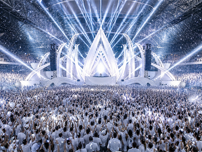
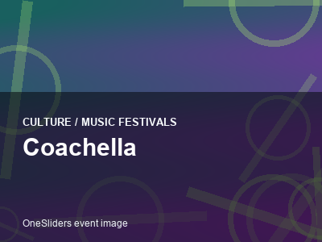
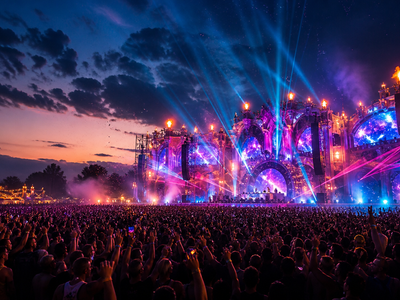

Culture - stages and crowds
Music festivals
Multi-day open-air gatherings built around line-ups, camping and a sense of place.
 Lollapalooza Chicago
Lollapalooza ChicagoLos Angeles, United States
 Primavera Sound Barcelona
Primavera Sound BarcelonaBarcelona, Spain
 Sziget Festival Budapest
Sziget Festival BudapestBudapest, Hungary
 Rock in Rio
Rock in RioSao Paulo, Brazil
 Roskilde Festival
Roskilde FestivalCopenhagen, Denmark
 Fuji Rock Festival
Fuji Rock FestivalTokyo, Japan
 Salzburger Festspiele
Salzburger FestspieleOpera, drama and concerts in Salzburg.

White Sensation AmsterdamAll-white arena dance event profile for Amsterdam.

Coachella
Tomorrowland Ultra Music Festival
Ultra Music Festival
Music festivals on OneSliders
Music festivals is the browsing page for culture, music festivals. It groups related OneSliders entries so visitors can move from a broad theme to specific events, places and practical planning details without opening a long article. The focus is quick orientation: what belongs in this topic, which nearby pages are worth comparing, and where the calendar or location structure gives the next useful step.